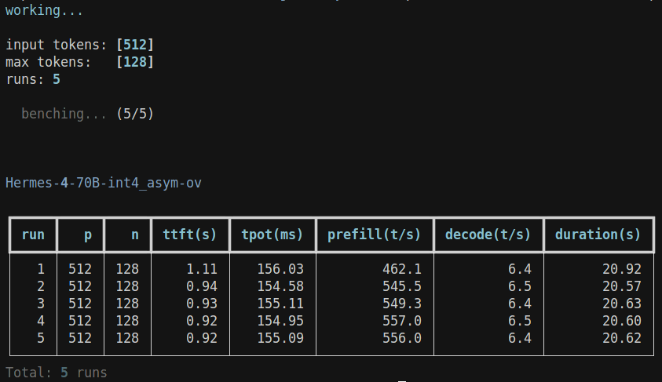
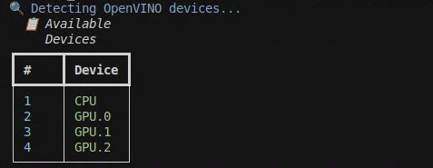

Commands¶
Table of contents¶
openarc add¶
Add a model to openarc_config.json for easy loading with openarc load.
Single device¶
openarc add \
--model-name <model-name> \
--model-path <path/to/model> \
--engine <engine> \
--model-type <model-type> \
--device <target-device>
To see what options you have for --device, use openarc tool device-detect.
VLM¶
openarc add \
--model-name <model-name> \
--model-path <path/to/model> \
--engine <engine> \
--model-type <model-type> \
--device <target-device> \
--vlm-type <vlm-type>
vlm-type maps a vision token for a given architecture using strings like qwen25vl, phi4mm and more. Use openarc add --help to see the available options. The server will complain if you get anything wrong, so it should be easy to figure out.
Whisper¶
openarc add \
--model-name <model-name> \
--model-path <path/to/whisper> \
--engine ovgenai \
--model-type whisper \
--device <target-device>
Kokoro (CPU only)¶
openarc add \
--model-name <model-name> \
--model-path <path/to/kokoro> \
--engine openvino \
--model-type kokoro \
--device CPU
Speculative Decoding¶
openarc add \
--model-name <model-name> \
--model-path <path/to/model> \
--engine ovgenai \
--model-type llm \
--device GPU.0 \
--draft-model-path <path/to/draftmodel> \
--draft-device CPU \
--num-assistant-tokens 5 \
--assistant-confidence-threshold 0.5
Advanced Configuration Options¶
runtime-config accepts many options to modify openvino runtime behavior for different inference scenarios. OpenArc reports c++ errors to the server when these fail, making experimentation easy.
See OpenVINO documentation on Inference Optimization to learn more about what can be customized.
Most options expose OpenVINO concepts that the docs don't handle well; I disucssed this in an answer on level1techs recently.
Reguardless, runtime-config is the entrypoint for all of them. Broadly, what you set in runtime-config Unfortunately, not all options are designed for transformers, so runtime-config was implemented in a way where you immediately get feedback from the openvino runtime after loading a model. Add an argument, load that model, get feedback from the server, run openarc bench. Overall, it makes iterating faster in an area where exactly none of the documentation is clear. The one's I am reporting here have been validated.
Review pipeline-paralellism preview to learn how you can customize multi device inference using HETERO device plugin. Some example commands are provided for a few difference scenarios:
Multi-GPU Pipeline Paralell¶
openarc add \
--model-name <model-name> \
--model-path <path/to/model> \
--engine ovgenai \
--model-type llm \
--device HETERO:GPU.0,GPU.1 \
--runtime-config "{"MODEL_DISTRIBUTION_POLICY": "PIPELINE_PARALLEL"}"
Tensor Paralell (CPU only)¶
Requires more than one CPU socket in a single node.
openarc add \
--model-name <model-name> \
--model-path <path/to/model> \
--engine ovgenai \
--model-type llm \
--device CPU \
--runtime-config "{"MODEL_DISTRIBUTION_POLICY": "TENSOR_PARALLEL"}"
Hybrid Mode/CPU Offload¶
openarc add \
--model-name <model-name> \
--model-path <path/to/model> \
--engine ovgenai \
--model-type llm \
--device HETERO:GPU.0,CPU \
--runtime-config "{"MODEL_DISTRIBUTION_POLICY": "PIPELINE_PARALLEL"}"
Speculative Decoding¶
openarc add \
--model-name <model-name> \
--model-path <path/to/model> \
--engine ovgenai \
--model-type llm \
--device GPU.0 \
--draft-model-path <path/to/draftmodel> \
--draft-device CPU \
--num-assistant-tokens 5 \
--assistant-confidence-threshold 0.5
openarc list¶
Reads added configurations from openarc_config.json.
Display all added models:
Display config metadata for a specific model:
Remove a configuration:
openarc serve¶
Starts the server.
Configure host and port
To load models on startup:
openarc load¶
After using openarc add you can use openarc load to read the added configuration and load models onto the OpenArc server.
OpenArc uses arguments from openarc add as metadata to make routing decisions internally; you are querying for correct inference code.
To load multiple models at once, use:
Be mindful of your resources; loading models can be resource intensive! On the first load, OpenVINO performs model compilation for the target --device.
When openarc load fails, the CLI tool displays a full stack trace to help you figure out why.
openarc status¶
Calls /openarc/status endpoint and returns a report. Shows loaded models.
openarc bench¶
Benchmark llm performance with pseudo-random input tokens.
This approach follows llama-bench, providing a baseline for the community to assess inference performance between llama.cpp backends and openvino.
To support different llm tokenizers, we need to standardize how tokens are chosen for benchmark inference. When you set --p we select 512 pseudo-random tokens as input_ids from the set of all tokens in the vocabulary.
--n controls the maximum amount of tokens we allow the model to generate; this bypasses eos and sets a hard upper limit.
Default values are:
Which gives:
openarc bench also records metrics in a sqlite database openarc_bench.db for easy analysis.
openarc tool¶
Utility scripts.
To see openvino properties your device supports use:
To see available devices use:
